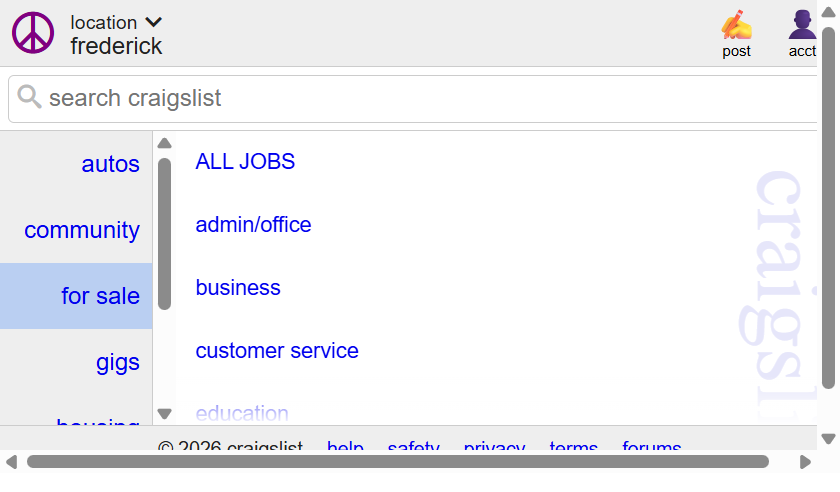

Apple is a strong example of good Gestalt design because it helps the eye understand the page quickly. The first principle at work is proximity. The headline, supporting text, and main button sit close together, so they feel like one clear message rather than separate pieces. This reduces mental effort because the user does not have to sort through unrelated content to understand the page. The page feels calm and intentional, which makes the experience smoother.
The second principle is similarity. The repeated button shapes, spacing, and product-card style create a visual pattern that feels organized. Because similar elements look alike, the user can tell what is important and what is interactive without much effort. This makes navigation easy and reduces confusion. The layout also uses figure-ground well, because the hero product stands apart from the quieter background. That gives the user a clear focal point and helps the message land immediately.
Overall, Apple does a good job guiding attention. The page feels clean, premium, and simple. It helps people understand the offer quickly and take the next step without having to work too hard.

Craigslist is a useful example of how weak Gestalt design can hurt usability. One problem is proximity. The category links are packed closely together with very little spacing, so the eye struggles to tell what belongs together. Instead of feeling like organized groups, the page looks like one large block of text. That slows users down and makes scanning harder than it should be.
The second issue is similarity. Many links share the same size, weight, and spacing, so they look almost identical. When elements are too similar, it is harder to tell one section from another. This creates more reading and less fast recognition. The layout also weakens closure, because the dense arrangement does not give the page clear chunks of information. The result is a cluttered, unfinished feeling that makes the experience harder to navigate.
In practical terms, Craigslist still works functionally, but it does not guide the eye well. People have to decode the layout before they can act. That makes the experience slower and less confident. Apple uses Gestalt principles to create clarity, while Craigslist shows how poor grouping and spacing can make even basic browsing feel harder than it needs to be.